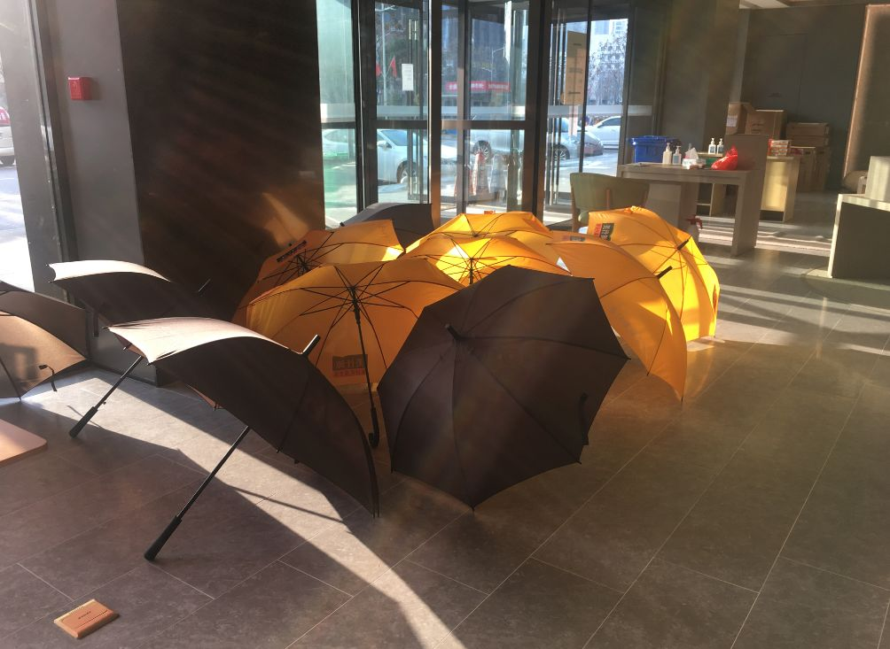

疫情日记 | 武汉封城的第三十八天
原文链接 备份链接 2月的最后一天，按照官方通知的日期，湖北省还要坚持10天，原以为只有28天，平白无故又“赠送”一天。封城的这段日子，对时间和价格逐渐失去概念，以前放假也没有时间观念，就记得离上班/开学还有多少天，总觉得假期过得飞快，还 …
查琼芳（第一批上海支援湖北医疗队队员、上海交大医学院附属仁济医院呼吸科主治医师）

酒店里的雨伞，在太阳下很和谐。查琼芳 供图
2月29日，支援湖北第三十六天，武汉，晴。
今天夜班，所以依旧可以睡到自然醒，可惜生物钟还是在6:30把我唤醒了，刷一会手机，和周医生约好一起去吃早饭。
这个时候赶着上八点白班和查房班的伙伴们已经出发，餐厅里空荡荡的。我依旧是牛肉面，人少就可以和师傅提要求了，我提出不加辣不加醋不加葱（昨天加醋的面让我吃的很感性），周医生尝试了武汉热干面，大厨的态度真的很好，我吃面的时候还过来跟我打招呼，说牛肉面的汤有点辣，我连忙表示这点辣我能承受。
至于周医生的热干面嘛，我觉得就是上海的冷面，区别一个是冷的，一个是热的，热面里拌了花生酱，周医生没放辣没放醋，跟真正的热干面口味估计打了个大折扣。看样子我俩似乎还没熟悉武汉人的最爱啊。
温暖的阳光从餐厅窗口投射进来，今天是个好天气，看样子我的期盼实现了。酒店的大堂里，撑满了我们雨天用的伞，颜色只有两种，黑色的、黄色的，在阳光下显得特别和谐。

酒店外面路旁的白玉兰安静地绽放。查琼芳 供图
感谢酒店的工作人员默默地为我们提供的服务，感恩每一个为此次抗疫工作默默付出的人们。
酒店外面阳光明媚，路旁的白玉兰安静绽放，看到它让我们一扫疲惫。酒店外面马路上的车比前几天多，人行道上依然空无一人，路边的店家无一例外都是铁将军把门，想起去年到武汉时灯火通明热闹非凡的景象，我不禁有些伤感。
从医护群里得知，我们的病人有心理科老师会诊了。金银潭医院有上海支援湖北医疗队中的心理科医生的加盟。
是啊，在重病房，患者住的时间一久，经历了周围人的生死别离，还有家庭所经历的创伤，很多病人出现不同程度的心理问题，有的失眠、有的焦虑，有的抑郁……
有一位老年患者因为妻子患新冠肺炎去世，儿子认为他住在医院可以更加安定，不希望病人出院，而病人呢想回家又内心纠结，出现了情绪低落，经过心理科老师的评估后认为他存在中度抑郁，及时对他进行治疗。
我们的护士对老先生的照顾已经是无微不至了：不想喝粥，马上递上自己的牛奶饼干；想吃水果，把自己酒店的水果带来给老先生吃。
可是，生活上的照顾远没安抚老人内心深处的问题，看样子我们还需要更多的人文关怀，同时辅以心理老师的帮助。
其实不仅仅是病人，在这么高压的环境下，医护人员也容易出现心理问题，所幸的是我们已经有心理老师加入群体，为一部分人进行心理疏导。
关于抑郁，想起我们刘组长说的话，就想笑。“我否认自己抑郁嘛，你们一定会说我抑郁，因为精神病病人从来不承认自己是精神病。我承认嘛，你们会说，看，他自己都承认了。”队长助理张明明老师在群里发了一张关于一线医护人员心理测试的问卷，我也上去做了一下，还好，除了中度的心理压力以外，没有抑郁，没有焦虑。看样子我的心态还不错嘛。
今天值夜班，又无缘一场特殊的生日会了，上海市中医院的刘燕护士四年一次的生日今天会在万豪酒店举行，最让人记忆深刻的是大群里发来了刘燕照顾过的病人的祝福视频，看着躺在床上的病人拿下面罩也要表达祝福的时刻，让大家都特别感动。
我们的付出，换来病人的康复和祝福，这是对我们最大的鼓励和缓压良药。
（澎湃新闻记者 陈斯斯 整理）
本期编辑 邢潭
推荐阅读


原文链接 备份链接 2月的最后一天，按照官方通知的日期，湖北省还要坚持10天，原以为只有28天，平白无故又“赠送”一天。封城的这段日子，对时间和价格逐渐失去概念，以前放假也没有时间观念，就记得离上班/开学还有多少天，总觉得假期过得飞快，还 …
原文链接 备份链接 新增和现有病例基数连续回落几天后，武汉各大医院终于度过最艰难的时刻。眼下，如何降低重症患者死亡率成为各大重症定点收治医院的首要任务。药物、血浆、ECMO等治疗手段已经纷纷进入临床应用，但面对捉摸不定的新冠病毒，医生们 …
原文链接 备份链接 2月的春光已经露出些明媚，但每当入夜，疫情下的武汉依然春寒料峭，霜寒刺骨。医护人员夜以继日地奋战在战“疫”一线，“宅家”的市民们或已进入梦乡，在城市的街头巷尾，还有一群“守夜人”出入于寒风中。黎明不远，终将来临。黎 …
原文链接 备份链接 澎湃新闻记者 张轶君 蔡琳 从年前到年后，阿里旗下办公软件“钉钉”的下载量经历了过山车一般起伏。 作为一款企业移动办公应用，钉钉年前平日下载量滑动在苹果App Store总榜五十名到二十名之间。然而让人意想不到的是，节 …
原文链接 备份链接 2月17日晚11点左右，赴武汉支援的上海华山医院麻醉科医生罗猛强（左一）与“插管敢死队”同事冯昌等人完成一例插管。受访人供图 作者|中青报·中青网记者 张均斌 孙庆玲 编辑|张国 医生们清楚，一位新冠肺炎患者最危险的地 …